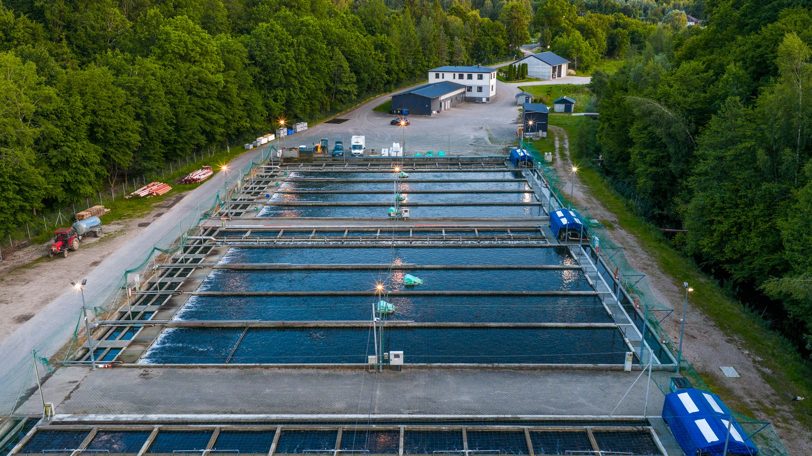
K2 Fish
Farm.
A refreshed logo, brand guidelines, a new website, photography, a drone film and a presentation template for K2 Fish Farm, one of the largest rainbow trout producers in Poland.
A market leader
that finally looks like one.
For years K2 has been among the top trout producers in Poland, with its own hatchery, transport fleet and a family tradition. Its market position didn’t need building. It needed showing.
The old logo and website didn’t match the scale of the business. We refreshed the mark, documented it in brand guidelines, designed and built a new website, and shot photos and a drone film on location. Finally, a presentation template for sales meetings.
Same fish,
new character.
We kept what customers recognise: the fish and the K2 name. Everything else changed: a single line instead of a flat illustration, deep green instead of blue, and type that works on a truck as well as on a label.
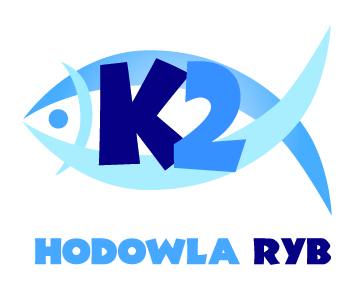
Rules that look after
the brand for us.
Primary and alternative versions, symbol, clear space, minimum sizes and palette: everything a printer, packaging supplier or agency needs to keep the logo consistent.
A modern website
for 40 years of tradition.
Structure & UX
A simple path: the farm’s story, fish offered in three sizes, quality and certificates, contact for wholesale buyers.
UI design
Large, natural drone shots and the deep green from the new guidelines. The site looks like the place it describes.
Content & blog
“About us”, “Fish” and “Trust & quality” sections, EU funding information and a blog about fish farming.
Build
A responsive WordPress site with an editing panel, contact form and SEO essentials.
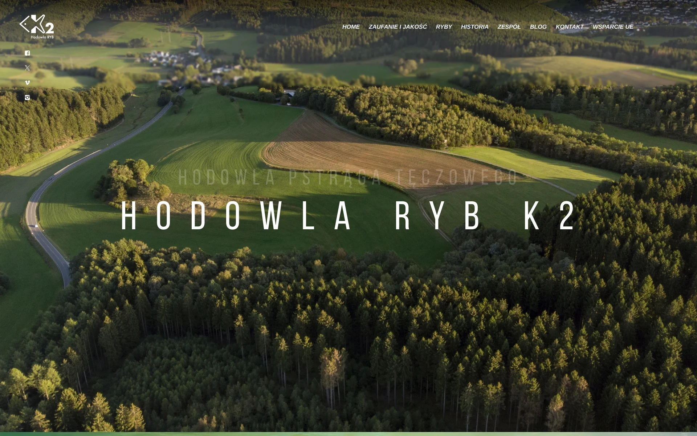
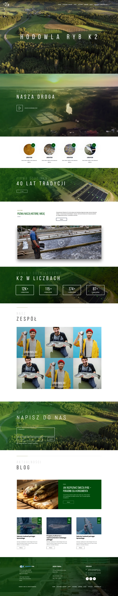
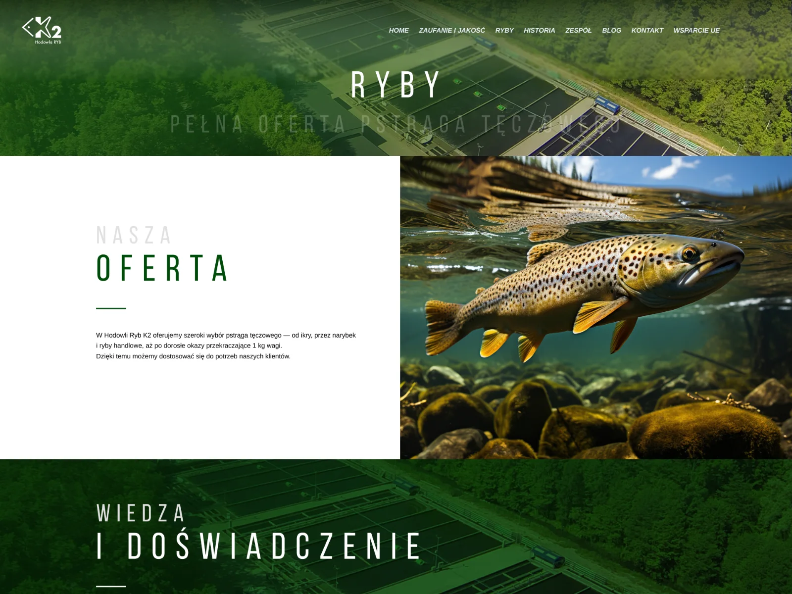
Shot on location,
at dawn.
No stock photos, just the real farm. Several shoot days across the seasons: ponds, hatchery, people and surroundings. Used on the website, in the presentation and on social media.
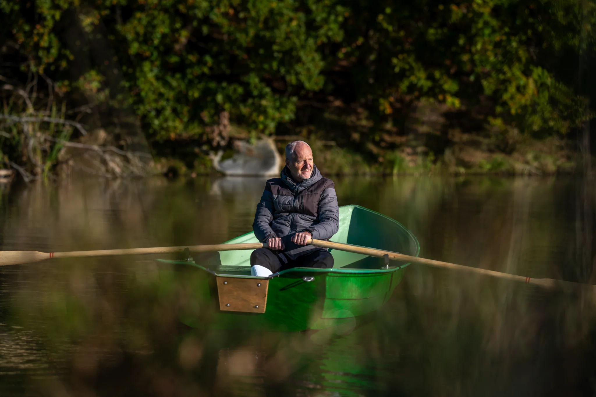
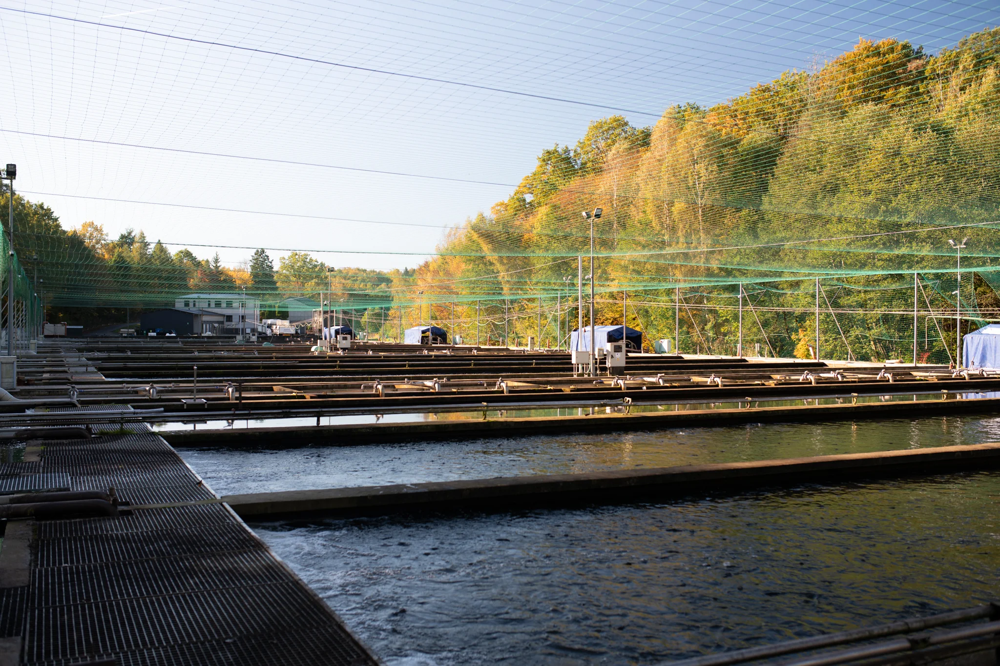
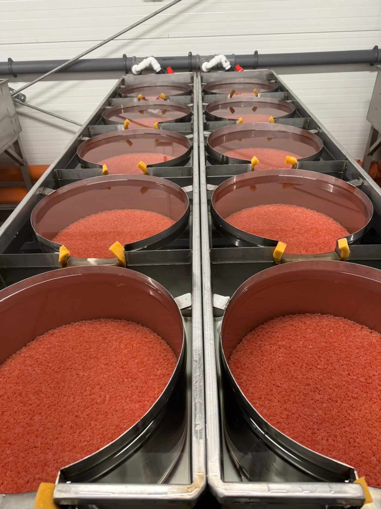
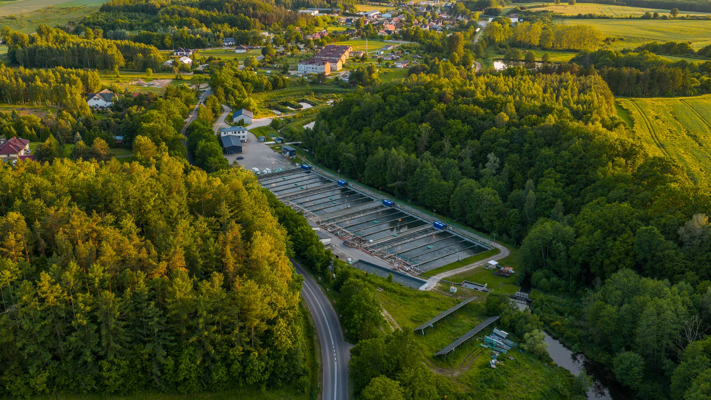
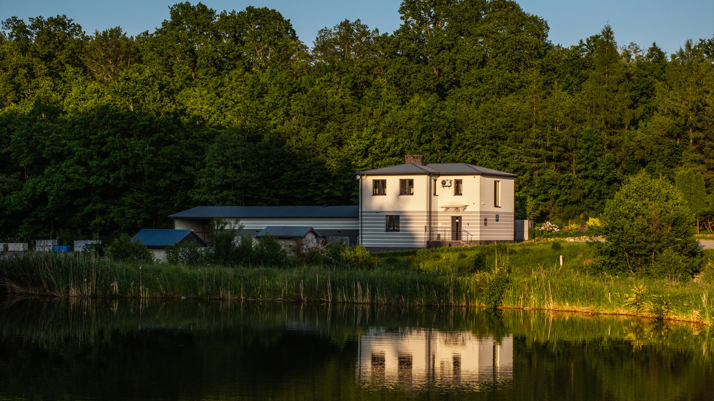
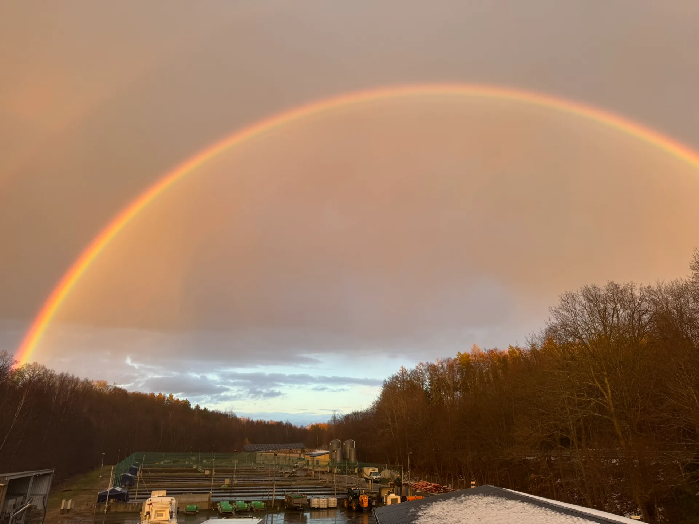
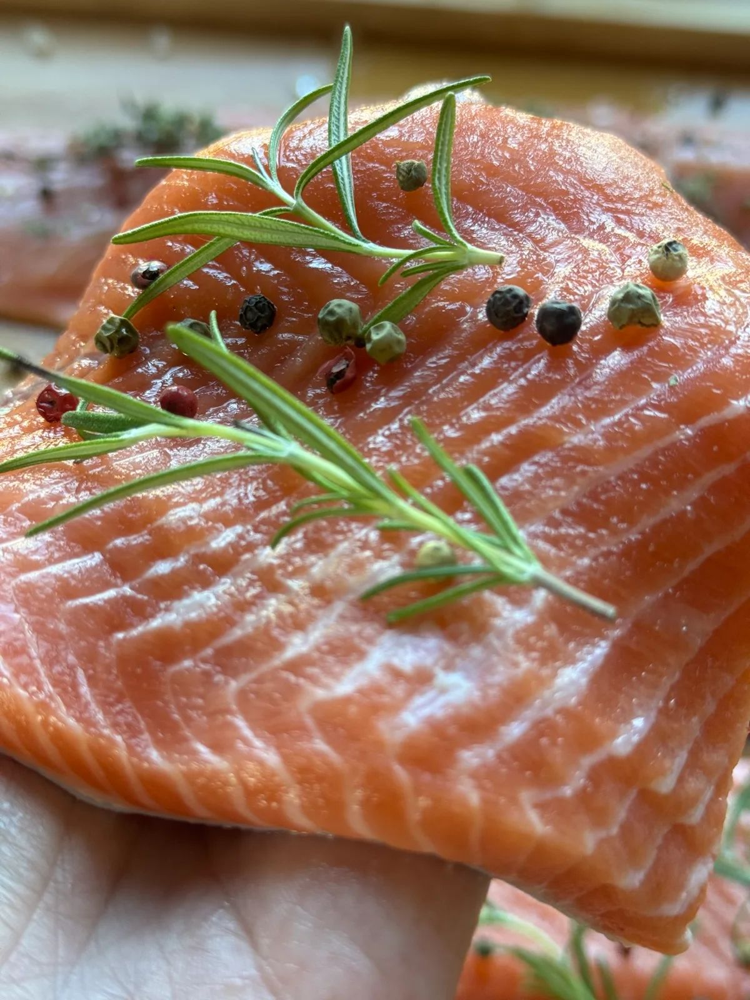
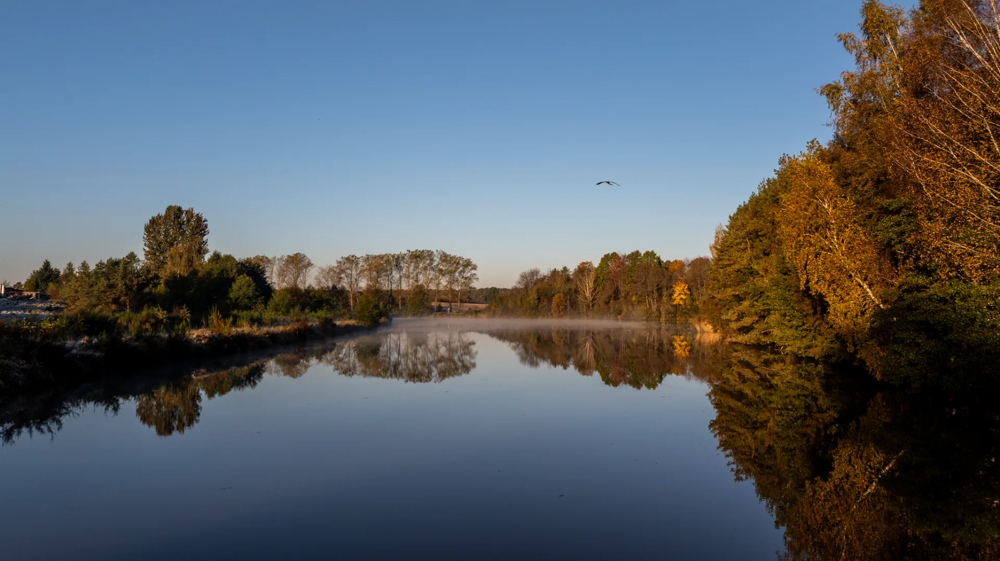
Scale you can only
see from above.
Drone footage shows what no ground-level shot can: the size of the farm and how it sits in the landscape. The film works on the website, in presentations and at trade fairs.
„A leading trout producer now has a brand that matches its position, from the logo and website to the presentation for buyer meetings.”